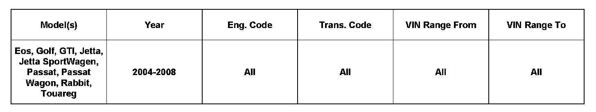
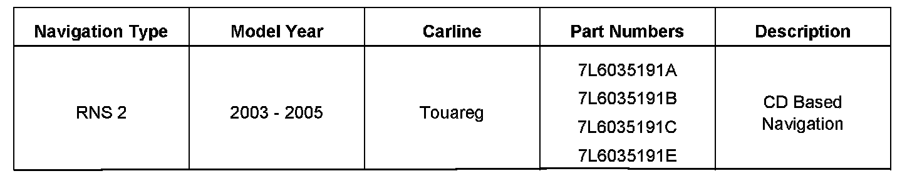
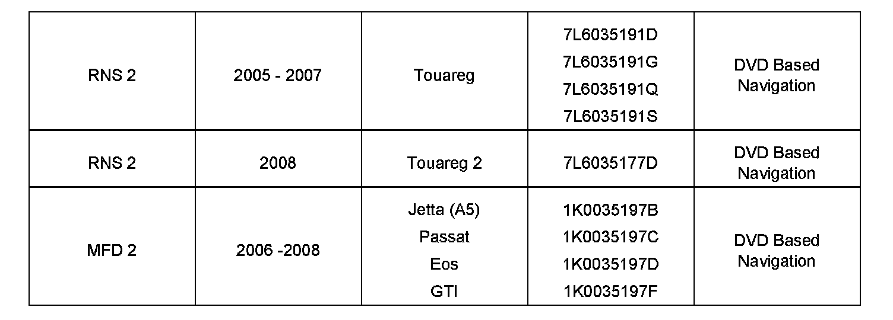

Navigation Radio - Radio Repair Program
91 10 07March 18, 2010
2022888

Vehicle Information
Condition
Bosch Navigation Radio Repair Program
Technical Background
To provide a low cost alternative to purchasing a new remanufactured navigation radio. The following complaints can be repaired by Bosch locally without purchasing a remanufactured radio.
Note:
This is only to be used for repairs outside of warranty. Vehicles under warranty need to follow the Direct Exchange Process.
^ Broken rotary knobs
^ Peeling or damaged fascia and buttons
^ Damaged LCD display
^ Damaged CD mechanism
Production Solution
Not applicable
Service


Navigation Radio Serviced
Additional Information
^ Make sure navigation radio is securely wrapped to avoid shipping damage
^ Include a clear description of the customer complaint
^ Unit will be shipped back within 2 business days upon receipt of the unit
^ Ground shipping is standard. Contact Bosch via the phone numbers below for faster shipping estimates
U.S. Bosch Contact Information
Phone: 800 266-2528
Email: BoschElectronicServices@us.bosch.com
Ship To:
Robert Bosch LLC
Car Multimedia
2800 S. 25th Avenue
Broadview, IL 60155-4594
Canada Bosch Contact Information
Phone: 888 689-4429
Email: BoschElectronicServices.Canada@us.bosch.com
Ship To:
Morgan Technology Inc.
4 - 160 Matheson Blvd. E.
Mississauga, ON L4Z 1V4
Canada
Warranty
Note:
This is only to be used for repairs outside of warranty. Vehicles under warranty need to follow the Direct Exchange Process.
Required Parts and Tools
Not applicable
Additional Information
All part and service references provided in this Technical Bulletin are subject to change and/or removal. Always check with your Parts Dept. and Repair Manuals for the latest information.